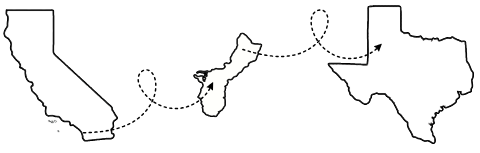

Away From the Desk
My life has taken me to some unexpected places, all thanks to my husband's time in the U.S. Navy.
We started in San Diego, where I finished my undergraduate degree, then moved to Guam, where I first started
my teaching career in high school math and got the chance to travel more, visiting Hawaii and Japan along the way.
While I've loved every place we've called home, I've chosen to settle back in Lubbock, Texas, now that I have a four-year-old son.
These days, my biggest adventures involve hunting down the latest Monster Jam truck to add to his growing collection.

Experience first, degree later.
I've had the opportunity to work in various roles and settings, which has allowed me to gain a diverse set of skills and perspectives. My experience in the field has been invaluable, and I believe it has prepared me well for the next step in my journey.
One Source of Truth
I kill duplicate docs and stale pages. What's left is accurate, findable, and actually maintained.
Fluent in Both
I can talk API with your engineers and outcomes with your executives in the same meeting. No translation loss either way.
Metrics Minded
I track what my docs actually change: support tickets down, onboarding time shorter, fewer repeat questions.